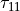

4. Simple shear of a 1D Cosserat layer with Drucker-Prager elastoplastic material¶
In this tutorial we will study a 1D Cosserat elastic perfectly plastic layer under simple shear. We provide the basic structure of a script file in the framework of Numerical Geolab. Here we will study model formulation and analysis execution.
The file for this tutorial can be found in:
ngeoFE_unittests.Mechanics.Cosserat.OneD.BVP.Cosserat1D_Drucker_Prager_App_1
4.1. Begining of file¶
Before we start giving the necessary commands for the formulation of the model specific python modules need to be loaded. Below we provide a list of the modules needed and a brief explanation.
from dolfin import *
import time
import numpy as np
from ngeoFE.feproblem import UserFEproblem, General_FEproblem_properties
from ngeoFE.fedefinitions import FEformulation
from ngeoFE.materials import UserMaterial
from ngeoFE_unittests import ngeo_parameters
from ngeoFE_unittests import plotting_params
import os #allows easier manipulation of directories
from ngeoFE.feproblem we import the classes of UserFeproblem() and General_FEproblem_properties() that will transform our series of commands to a problem understood by dolfin
from ngeoFE.fedefinitions we import the class of FEformulation() that defines the vector of unknown derivatives to be used in the variational form solved by the dolfin package.
from ngeoFE.materials we import the UserMaterial() class where the material is specified.
from ngeoFE_unittests we import ngeo_parameters. This file contains the material library path and reference data that can be used to check the analysis results in the context of a unittest.
4.2. Finite Element Formulation¶
We do this by specifying the number of vector components for the test function, the interpolation function used inside the element and the number Gauss points present in the element for the integral evaluation of the weak form.
class Cosserat1DFEformulation(FEformulation):
'''
Defines a user FE formulation
'''
def __init__(self):
# Number of stress/deformation components
self.p_nstr=4
# Number of Gauss points
self.ns=1
def generalized_epsilon(self,v):
"""
Set user's generalized deformation vector
"""
scale_u=1.#1./1000.
gde=[
Dx(v[0],0)*scale_u, #gamma_11
v[2]*scale_u, #gamma_12
Dx(v[1],0)*scale_u-v[2]*scale_u, #gamma_21
Dx(v[2],0)*scale_u, #kappa_31
]
return as_vector(gde)
def create_element(self,cell):
"""
Set desired element
"""
self.degree=1
element1=VectorElement("Lagrange",cell,degree=self.degree,dim=2)
element2=FiniteElement("Lagrange",cell,degree=self.degree)
element=MixedElement([element1,element2])
return element
In the code snippet above, we provide the finite element formulation for the problem at hand. This is a Mixed finite element that consist of a the displacement and the rotation field. We consider first order polynomials for the shape functions of the displacement field and the rotation field. The class is initialized with 4 strain and curvature components and 1 Gauss point. The python function:
- generalized_epsilon(v)¶
The notation used by the dolfin package indicates that Dx(v[i],j) is the derivative of the vector component (i) of the Testfunction (v), w.r.t. the spatial direction (j). The Testfunction is an object of the dolfin package available in the FeniCs documentation.
|The python function:
- create_element(cell)¶
We note here that the VectorElelement() class indicates that the components of the function space for each vector component are the same.
4.3. Finite element problem description¶
We proceed now with building the main Finite element model, corresponding to shearing in 2D of a Cauchy elastoplastic layer with a Von Mises yield criterion and strain hardening. The finite element model is built inside a child class that inherits its methods from the parentclass UserFEproblem(). We will provide here commentary for each method used inside the childclass Cauchy2DFEproblem(UserFEproblem).
class Cosserat1DFEproblem(UserFEproblem):
"""
Defines a user FE problem for given FE formulation
"""
def __init__(self,FEformulation):
self.description="Example of 1D problem, Cosserat continuum with Drucker Prager material"
scale = 1.
self.problem_step=0
self.Pressure_loading = 0.*200./3.*scale
self.Normal_loading_eff = -600./3*scale+self.Pressure_loading
self.Normal_loading_total =self.Normal_loading_eff-self.Pressure_loading
super().__init__(FEformulation)
In the class __init__() method, the finite element formulation defined above is provided as argument. Because a Drucker - Prager yield criterion is used,
an initial effective confining stress needs to be applied to the model. In the initialization step we set the values of the variables storing the effective and total
confining stress at the beginning of the analysis. We will initialize the appropriate stress components of the model later in the set_initial_conditions() method below.
The initialization then proceeds to set up all the methods of the parentclass UserFEproblem(). The methods inside the class are
defined by overriding the methods inside the parent class.
def set_general_properties(self):
"""
Set here all the parameters of the problem, except material properties
"""
self.genprops=General_FEproblem_properties()
# Number of state variables
self.genprops.p_nsvars=85
This method is used to provide the number of state variables of the material. In this tutorial only the mechanical behavior is important and therefore, the state of material is described by the increment of stress, generalized stress, total strain, total curvature, elastic strain, elastic curvature, plastic strain, plastic curvature, plastic strain multiplier and plastic strain/curvature rate. Notice that even though the problem is in 1D and 18 strain/curvature components (and consequently 18 stress/ generalized stress components) are needed for the description of equilibrium. The state of the material contains the information also for the rest components of the general 3D problem. For each material used by the Numerical Geolab, the number of state variable components is given in material properties table.
For this simple geometry the capabilities of dolfin can be used to define a rectangular mesh specifying the left and right points of the interval domain.
def create_mesh(self):
"""
Set mesh and subdomains
"""
self.w=1.
self.nw=int(1)
mesh=IntervalMesh(self.nw,-self.w/2.,self.w/2.)
cd = MeshFunction("size_t", mesh, mesh.topology().dim())
fd = MeshFunction("size_t", mesh, mesh.topology().dim()-1)
return mesh, cd, fd
For the domain at hand we specify a discretization with nx=1 element along the x[0] component. The MeshFunction() method of dolfin is used to provide the mesh object, the interior domain and the boundary domains.
We next assign values to the regions of the mesh defined by different material properties.
def create_subdomains(self,mesh):
"""
Create subdomains by marking regions
"""
subdomains = MeshFunction("size_t", mesh, mesh.topology().dim())
subdomains.set_all(0) #assigns material/props number 0 everywhere
return subdomains
In this tutorial all the domain is defined by the same material properties and therefore the value 0 will be assigned everywhere inside the mesh.
This value is a number indicating which material parameters need to be taken into account in each mesh region (see the corresponding method set_material_params()).
Next, we define the boundary selection class of the model. We perform the definition of the boundary inside the
Cosserat1DFEproblem class. In particular we define the Boundary class.
class Boundary(SubDomain):
def __init__(self,xyz,param):
self.xyz=xyz
self.param=param
super().__init__()
def inside(self, x, on_boundary):
tol = DOLFIN_EPS
return on_boundary and near(x[self.xyz],self.param)
This class inherits from the SubDomain of the dolfin module. We redefine the inside() method so that it
finds the points of the domain whose coordinate is close to the value set by the param variable.
We use the same definition to define the Gauss points selection class that we will inquire for results after the end of the analysis. We restrict the region of interest to 1 element. Therefore, one Gauss point will be considered
class Gauss_point_Querry(SubDomain):
def __init__(self,w,nw):
self.w=w
self.nw=nw
super().__init__()
def inside(self, x, on_boundary):
return between(x[0], (-self.w/(self.nw),self.w/(self.nw)))
Finally, we use the methods Meshfunction() and mark() in order to return the Gauss point that is of interest.
def create_Gauss_point_querry_domain(self,mesh):
"""
Create subdomains by marking regions
"""
GaussDomain = MeshFunction("size_t", mesh, mesh.topology().dim())
GaussDomain.set_all(0) #assigns material/props number 0 everywhere
GaussDomainQuerry= self.Gauss_point_Querry(self.w,self.nw)
GaussDomainQuerry.mark(GaussDomain,1)
return GaussDomain
Boundary class we defined earlier.We do so by assigning the numbers 1 to 2 to the left and right interval bounds of the model.
def mark_boundaries(self, boundaries):
"""
Mark left and right boundary points
"""
left0 = self.Boundary(0,-self.w/2.)
left0.mark(boundaries, 1)
right0 = self.Boundary(0,self.w/2.)
right0.mark(boundaries, 2)
#
return
4.3.1. Definition of initial conditions¶
We proceed now to define the initial conditions of the problem. Here we set the initial confinement stress at the normal stress components of the material. Moreover we initialize the total stress field  used in equilibrium equations to the total stress value Here because we consider a dry material the effective normal stress and the total normal stresses are equal. Finally we don’t set any initial displacement to the model.
def set_initial_conditions(self):
"""
Initialize state variables vector
"""
#Modify the state variables (corresponding to the stresses)
tmp=np.zeros(self.genprops.p_nsvars)
tmp[1-1]=self.Normal_loading_eff
tmp[5-1]=self.Normal_loading_eff
tmp[9-1]=self.Normal_loading_eff
self.feobj.svars2.interpolate(Constant(tmp))
#Modify the stresses (for Paraview)
tmp=np.zeros(4)
tmp[1-1]=self.Normal_loading_total
self.feobj.sigma2.interpolate(Constant(tmp))
tmp=np.zeros(3)
self.feobj.usol.interpolate(Constant(tmp))
pass
4.3.2. Assigning boundary conditions¶
We are now able to identify the boundaries of the mesh and assign different boundary condition to each side of the boundary. The way we apply the boundary conditions can be seen in the method:
- set_bcs()¶
def set_bcs(self):
"""
Set boundary conditions for the user problem / could be replaced by external mesher, e.g. Abaqus, Gmsh...
"""
p = self.Normal_loading_eff
tanfi = self.mats[0].props[10]
G = self.mats[0].props[1]
Gc = self.mats[0].props[2]
h1 = self.mats[0].props[15]
h2 = self.mats[0].props[16]
self.u1_tot=p*tanfi/(np.sqrt(2*(h1+h2))*(G-Gc))
scale_u=1.
bcs=[]
if self.problem_step == 0:
bcs = [
[1, [0, [0,0], 0.]],
[1, [0, [0,1], 0.]],
[1, [1, [1], 0.]],
[2, [0, [0,0], 0]],
[2, [0, [0,1], 0]],
[2, [1, [1], 0.]],
]
elif self.problem_step == 1:
bcs = [
[1, [0, [0,0], 0.]],
[1, [0, [0,1], 0.]],
[1, [1, [1], 0.]],
[2, [0, [0,0], 0.]],
[2, [0, [0,1], self.u1_tot/scale_u]],
[2, [1, [1], 0.]],
]
elif self.problem_step > 1:
bcs = [
[1, [0, [0,0], 0.]],
[1, [0, [0,1], 0.]],
[1, [1, [1], 0.]],
[2, [0, [0,0], 0.]],
[2, [0, [0,1], self.u1_tot/scale_u]],
[2, [1, [1], 0.]],
]
return bcs
Inside this method the boundaries are assigned with the use of a nested list. Dirichlet, Neuman and Robin boundary conditions can be applied both incrementally and instantaneously. The boundary conditions can be assigned to a boundary region or pointwise.
In this example different boundary conditions are applied during the duration (steps) of the analysis. Initially the model is kept in place while the initial stress field is applied. Then, at the later stages of the analysis, shearing takes place keeping the normal displacements fixed under zero generalized moments.
The region id ranges from 1 to 2 indicating the left, and right region of the boundary. Considering the displacement field, the type of bc is set to 0, specifying incremental Dirichlet boundary conditions.The displacement vector components are defined based on the form of the mixed finite element i.e [[displacement components], [rotation components]]. That is the displacement field is a list [x,y] that has two components, which need to be defined separately from the rotational field. Because the displacement field precedes the rotation field in the definition of the Mixed finite element, its degrees of freedom start with 0 (x=0 in the list). The second position in the list (variable y) indicates the normal (y=0) and shear component (y=1) of the displacement field respectively.
The rotational field has only one vector component and therefore it is denoted by the list [x], where x=1. We consider that during shearing the ends of the model are left free to rotate so that the component of the generalized moment vector is zero. We inidicate this by setting the type of the boundary condition to 1 (Neumann boundary condition) and its value to zero. In this case the Cosserat continuum behaves like a Cauchy until yielding.
We note further that the displacement values we set incrementally to the model are chosen such that the yielding of the model -start of plasticity- takes place at the start of the increment (no intermediate value between two increments). The value of the incremental increase in shear displacement is then a function of the confinement pressure and the material properties of the medium.
4.3.3. Assigning the nodal history output¶
Numerical Geolab offers the user the capability of extracting the output at the nodes and regions of the boundary at the converged increments of the numerical analysis. This capability is given to the user in order to obtain the specific nodal output of the solution (forces, displacements) instead of using the interpolated results provided in a separate .vtk file for postprocessing with a third party software (e.g. Paraview). The history output at the nodes can be given by:
def history_output(self):
"""
Used to get output of residual at selected node
"""
hist=[[1,[1,[0,0]]],
[1,[0,[0,0]]],
[1,[1,[0,1]]],
[1,[0,[0,1]]],
[1,[0,[1]]],
[1,[1,[1]]],
[2,[1,[0,0]]],
[2,[0,[0,0]]],
[2,[1,[0,1]]],
[2,[0,[0,1]]],
[2,[0,[1]]],
[2,[1,[1]]],
]
return hist
We note that the same principle as in the case of the boundary conditions definitions apply.
In this application we also take note of the state variables of the problem in particular at the Gauss point we have isolated, we inquire about the stresses, moments, strains, curvatures and plastic multiplier. We will use these quantities later for validating the response of the Cosserat model.
def history_svars_output(self):
"""
Used to get output of svars at selected Gauss point
"""
hist_svars=[[1,[1,[0]]], #tau_11
[1,[1,[1]]], #tau_12
[1,[1,[2]]], #tau_13
[1,[1,[3]]], #tau_21
[1,[1,[4]]], #tau_22
[1,[1,[5]]], #tau_23
[1,[1,[6]]], #tau_31
[1,[1,[7]]], #tau_32
[1,[1,[8]]], #tau_33
[1,[1,[9]]], #mu_11
[1,[1,[10]]], #mu_12
[1,[1,[11]]], #mu_13
[1,[1,[12]]], #mu_21
[1,[1,[13]]], #mu_22
[1,[1,[14]]], #mu_23
[1,[1,[15]]], #mu_31
[1,[1,[16]]], #mu_32
[1,[1,[17]]], #mu_33
[1,[1,[18]]], #gamma_11
[1,[1,[19]]], #gamma_12
[1,[1,[20]]], #gamma_13
[1,[1,[21]]], #gamma_21
[1,[1,[22]]], #gamma_22
[1,[1,[23]]], #gamma_23
[1,[1,[24]]], #gamma_31
[1,[1,[25]]], #gamma_32
[1,[1,[26]]], #gamma_33
[1,[1,[27]]], #kappa_11
[1,[1,[28]]], #kappa_12
[1,[1,[29]]], #kappa_13
[1,[1,[30]]], #kappa_21
[1,[1,[31]]], #kappa_22
[1,[1,[32]]], #kappa_23
[1,[1,[33]]], #kappa_31
[1,[1,[34]]], #kappa_32
[1,[1,[35]]], #kappa_33
[1,[1,[57]]], #lambda_dot
]
return hist_svars
4.4. Material specification¶
Next, we define the analysis material that we have already assigned in the create_subdomains() method.
def set_materials(self):
"""
Create material objects and set material parameters
"""
mats=[]
# load material #1
env_lib=ngeo_parameters.env_lib
umat_lib_path= ngeo_parameters.umat_lib_path
umat_lib = umat_lib_path+'/COSSERAT3D/libplast_Cosserat3D.so'
umat_id=1 # if many materials exist in the same library
mat=UserMaterial(env_lib,umat_lib,umat_id)
mat.props=self.set_material_1_properties()
#
mats.append(mat)
return mats
The ngeo_parameters.py module contains the relative path to the materials libraries, which specify the different materials available to the user. The variable umat_id=1 needs to be set for the 1D analyses performed here. It specifies the mapping of the updated vector components of the strain increment and corresponding tensor components of the constitutive matrix, with their position in the 3D strain/curvature vector and constitutive matrix provided at the material subroutine (material algorithm). This mapping returns back the correct components of the stress vector and constitutive matrix to pass into the residual calculation of the weak form in dolfin (equilibrium iterations). The material properties passed into the material algorithm, are set with the helper method:
def set_material_1_properties(self):
"""
Sets material parameters
"""
g1=8./5.;g2=2./5.;g3=0 ;g4=0.
h1=2./3. ;h2=-1./6.;h3=2./3.;h4=-1./6.;
K=666.66; G=1.*10.**3.; Gc=0.5*10.**3. ; L=1*10**(2.);R=10.*10.**(-3.);
MG=G*(R**2.)/h3 ; MGc=MG;
tanfi=0.5; cc=0.;
tanpsi=0.; Hsfi=0.; Hscc=-0.;
eta1=0.0
prop_num=29
props=np.zeros(prop_num)
props[0]=K
props[1]=G
props[2]=Gc
props[3]=L
props[4]=MG
props[5]=MGc
props[9]=R
props[10]=tanfi
props[11]=cc
props[12]=tanpsi
props[13]=Hsfi
props[14]=Hscc
props[15]=h1
props[16]=h2
props[17]=h3
props[18]=h4
props[19]=g1
props[20]=g2
props[21]=g3
props[22]=g4
props[23]=eta1
return props
In this example we chose to provide the material young modulus EE, Poisson ratio nu, the material yield strength in simple shear cc and the isotropic hardening parameter during yield equal to H=1. The parameters passed into the material subroutine are the 3D isotropic compression modulus KK and the shear modulus GG. Therefore, a transformation of the elastic constants is needed. The elastic constants (GG, KK) used together with the material hardening parameter, H, and their position in the material properties (numpy array props), can be found in Table (reference needed) and the material library files that accompany Numerical Geolab.
4.5. Analysis execution¶
Our model is now set and ready to run. In order to perform an analysis for the problem at hand, we can simply type:
my_FEformulation=Cosserat1DFEformulation()
my_FEproblem=Cosserat1DFEproblem(my_FEformulation)
path1='../reference_data'
filename = 'Cosserat1D_Drucker_Prager_tests_App_1'
saveto=os.path.join(path1,filename+'.xdmf')
converged=my_FEproblem.solve(saveto,summary=True)
This will use the solve method inside the parent UserFeproblem() class that starts the solution procedure. The analysis results are the saved to an ‘.xdmf’ file to be postprocessed by a third party application (e.g. Paraview).
4.6. Control of the solution procedure¶
The FEproblem() class of Numerical Geolab allows for great flexibility in choosing the solver parameters with which an analysis can be performed.
Below a set of parameters can be passed as attributes to the solver for controlling the frequency of writing output (my_FEproblem.slv.incmodulo),
the tolerance (my_FEproblem.slv.convergence_tol), the maximum increment size (my_FEproblem.slv.dtmax), the maximum analysis time
(my_FEproblem.slv.tmax) and the maximum number of increments (my_FEproblem.slv.nincmax=50). We intorduce these parameters of the solution procedure
in the give_me_solver_params() method.
def give_me_solver_params(self,scale_t=1.):
self.scale_t = scale_t
self.slv.incmodulo = 1
self.slv.dtmax=1.0*self.scale_t
self.slv.tmax=1.*scale_t
ninc=int(self.slv.tmax/self.slv.dtmax)
self.slv.nincmax=50
self.slv.convergence_tol=10**-6
self.slv.removezerolines=False
After we have defined the analysis parameters we specify the analysis steps. The analysis is separated into seven steps. Th first step is the initial step, where the model
is held still until the application of the initial confining stress. After the initial prestress the model is sheared. The first step of shear is elastic and finishes when t
the elastic limit of the structure is reached. After the termination of each step, the solver applies the boundary conditions of the next step to the model using the initBCs() method
and solves the problem using the solve() method.
def run_analysis_procedure(self,reference_data_path):
saveto=reference_data_path+"Cosserat_1D_Drucker-Prager_test_step_0"+"_App_1"+".xdmf"
self.problem_step = 0
self.bcs=self.set_bcs()
self.feobj.symbolic_bcs = sorted(self.bcs, key=itemgetter(1))
print("initial")
converged=self.solve(saveto,summary=True)
scale_t_program = [self.scale_t,self.scale_t,self.scale_t,self.scale_t,self.scale_t,self.scale_t]
ninc=[100,100,100,100,100,100]
print("shearing1")
nsteps=6
for i in range(nsteps):
self.problem_step = i+1
scale_t = scale_t_program[i]
self.slv.nincmax=ninc[i]
self.slv.dtmax=0.1*scale_t
self.slv.dt=self.slv.dtmax
self.slv.tmax=self.slv.tmax+1.*scale_t
self.feobj.symbolic_bcs = sorted(self.set_bcs(), key = itemgetter(1))
self.feobj.initBCs()
filename = 'Cosserat_1D_Drucker-Prager_test_step_'+str(i+1)
saveto= reference_data_path+"Cosserat_1D_Drucker-Prager_test_step_"+str(i+1)+"_App_1"+".xdmf"
converged=self.solve(saveto,summary=True)
return converged
4.7. Analysis results¶
For this simple example we are able to evaluate analytically the analytical expression of the plastic strain multiplier. We evaluate the expression using the applied rate of shear displacement
to the model. In order to extract the shear displacement from the nodes we specified earlier in the analysis results, using the history_output() we first note that the results of the history_output()
are given as a nested list of the following structure:
def history_unpack(self,list1):
for i,elem in enumerate(list1):
# print(elem)
if i==0:
self.array_time=np.array([[elem[0]]])
self.array_force=elem[1].reshape((1,len(elem[1])))
self.array_disp=elem[2].reshape((1,len(elem[2])))
continue
self.array_time=np.concatenate((self.array_time.copy(),np.array([[elem[0]]])))
self.array_force=np.concatenate((self.array_force.copy(),elem[1].reshape((1,len(elem[1])))))
self.array_disp=np.concatenate((self.array_disp.copy(),elem[2].reshape((1,len(elem[2])))))
def svars_history_unpack(self,list1):
for i,elem in enumerate(list1):
if i==0:
# print(elem)
self.array_dtime=np.array([[elem[0]]])
self.array_gp_svars_comp=elem[1].reshape((1,len(elem[1])))
continue
self.array_dtime=np.concatenate((self.array_dtime.copy(),np.array([[elem[0]]])))
self.array_gp_svars_comp=np.concatenate((self.array_gp_svars_comp.copy(),elem[1].reshape((1,len(elem[1])))))
We further define the extract functions that give the final form to the extracted matrices for the analysis result objects. We can use the resulting object instances in analytical calculations for the verification of our numerical analyses.
def extract_force_disp(self):
analysis_history=self.feobj.problem_history
self.history_unpack(analysis_history)
self.array_time=self.array_time[:].copy()
self.array_force=self.array_force[:,:]#.reshape((-1,20))
self.array_disp=self.array_disp[:,:]#.reshape((-1,20)).copy()
return
def extract_svars_gauss_point(self):
analysis_svars_history=self.feobj.problem_svars_history
self.svars_history_unpack(analysis_svars_history)
self.array_dtime=self.array_dtime[:].copy()
self.array_gp_svars_comp=self.array_gp_svars_comp[:,:].copy()
Using the above results we can extract the elasto-plastic model’s numerical response due to shear. Our model contains only one element therefore, we expect its response to coincide with that of the elastoplastic material i.e. homogeneous deformation. The results of the analysis are summarized in the following figure.
Fig. 4.7.1 Deviatoric stress vs deviatoric strain during the analysis.¶ |
Fig. 4.7.2 Analytical vs numerical plastic coefficient. .¶ |
{kind=link}
{kind=link}
Fig. 4.7.3 Relative error between the analytical and numerically evaluated plastic coefficient.¶ |
{kind=link}